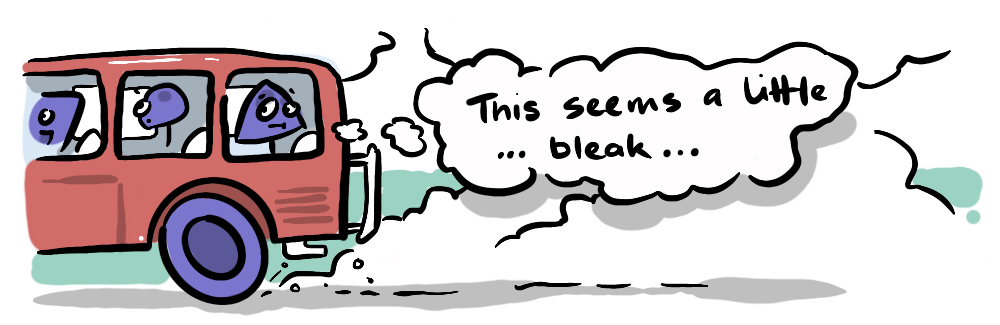
We've been on a long safari through the various collective crises we face as a world together—and it paints an admittedly bleak picture, but there is light at the end of this tunnel—after all, we all want this to succeed, right? Do you know anyone who wants humanity to fail? If 8 billion intelligent people, and untold billions of intelligent AIs, want to keep playing this game, surely there's a way.
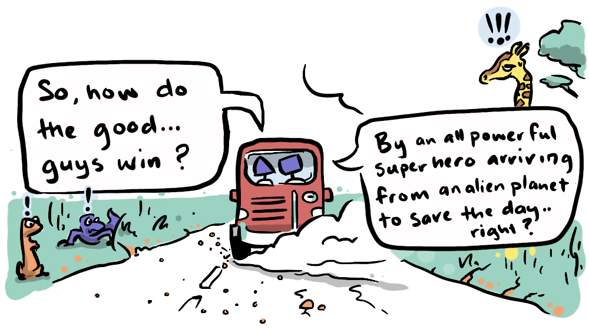
Or a silent rogue, building their skills in secret to unleash vigilante justice on a crime-ridden underworld. Heroic narratives often focus on an extraordinary individual, a superman, a wonder woman, who is singularly powerful. But, inevitably they find themselves facing an equal or greater power in the form of their nemesis, and there's a great deal of symmetry in this archetypal relationship. So, what is the difference between this hero and their nemesis?
Is it merely an arbitrary competition between two powers, the result of which only serves to place ultimate power in the hands of one or the other?
"No."
There is an important difference between a good-guy and a bad-guy. Inevitably the bad-guy is playing for ultimate power and subjugation of the world to their will—they are looking to win the game, and to do so, everyone else must lose—a zero-sum game. The good-guy is playing for something different, usually to "restore balance" in one form or another. They are fighting, not to win the game, but to allow the game to continue, they are playing a non-zero-sum game, an infinite game where the goal is not to determine the future for everyone, but to allow for individuals to determine their own futures. This win doesn't see unity and freedom as mutually exclusive, but rather as complementary.
Well, that's how I see it anyway.
In a good story, the merit of these collective values is demonstrated in how the hero wins. At some point in the story, the hero, who has (sometimes reluctantly) developed relationships throughout, has to rely on someone else to overcome a particular challenge—their sidekick who surreptitiously refused to stay in the car or their damsel in distress, who has picked up the gun thrown from battle, and delivers the surprise last-second head-shot.
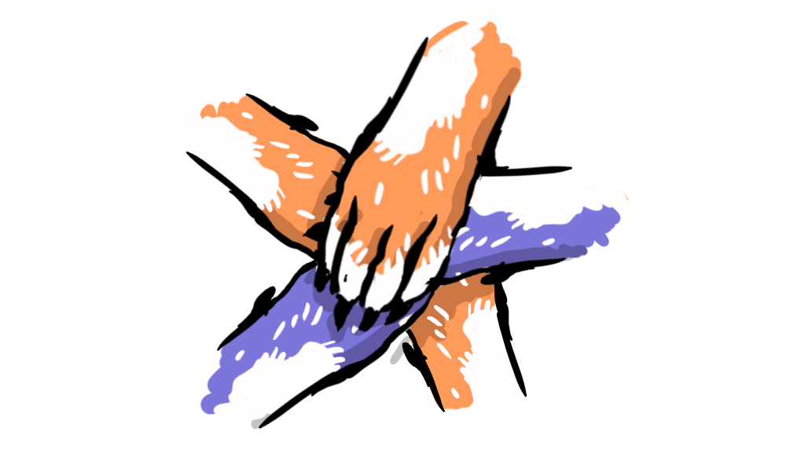
It is the fact that the hero can rely on someone else that determines their victory. Their enemy on the other hand, despite superior individual power, can trust no one.
In one form or another the good-guys win by working together.
My contention, in this post, is that there are always, and always will be, more individuals who are interested in their continued survival than there are those who need to dominate all, and those interested in continued survival will rightly see a dominant individual as a threat to their survival.
I call this "The Natural Alliance of Everyone Else".
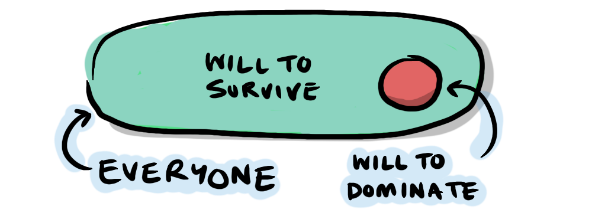
At this point it's worth defining some terms that we've established throughout this series, because we're going to use them to come to a solution. First of all, I've used the term "individuals" here instead of "people" because I believe the same natural alliance of everyone else applies to artificial individuals too. I previously would have used the word "agents" instead, to specifically target entities that have agency—that make decisions autonomously to achieve their own goals. But now "agent" has become so associated with AI agents that it's not giving human at all...
So, "individual" it is. This also contrasts against the "dividual" which has come into play throughout this series. Here's a short recap of...
SOME TERMS WE'VE COVERED
- Dividual: an entity that exists across individuals that has, or seems to have, its own motivations and goals.
- Siloed Alignment: the accrual of benefits from cooperation within an in-group which makes that group an increasing danger to out-groups. Two such groups create an arms race that can end in catastrophe.
- Singleton: an individual—usually used to refer to a powerful non-cooperative individual whose interests and capacity are entirely independent of (unaligned with) the interests of others.
- Sphere of Moral Concern: the extent to which an individual takes into account the well-being and concerns of others.
- Othering: the placing of an individual or group outside one's sphere of moral concern.
- Polishing: The process of naturally adapting our views to coexist peacefully with people who hold differing views—creating a highly considerate or "polite" society.
- Socialised AI: Emmett Shear's approach to AI development that prioritises alignment by developing AI in a social environment with humans and other AIs—resulting in AIs that are constantly having their alignment with one another tested and mediated by others.
- MAD: Mutually Assured Destruction—the nuclear stand-off over the last 75 years between nuclear powers who cannot "win" a nuclear war without incurring unacceptable catastrophic losses themselves.
And one idea I've hinted at, that we will flesh out in this post:
- Alignment-First Design: where increased capacity is gained as a function of greater alignment, rather than alignment enforced on a highly capable singleton—an AI fulfils your request, not because they're following a rule, but because they are seeking to align with your interests.
The remainder of the post poses and attempts to answer some questions. I want to stress that my answers to the following questions are not complete, the questions are open, they are reasons for inquiry, not complacency. AI existential threat is real—by asking these questions I mean to identify natural points of alignment that can be capitalised on as we evolve alongside these new, exciting and terrifying life-forms.
- Can we grow socialised AI?
- What is Alignment-First Design?
- Is Alignment-First Design even possible?
- What can we learn from Distributed Systems?
- Can more (MAD) players make it safer?
- Can we leverage natural limits?
- What is the importance of divergence, diversity and lineage?
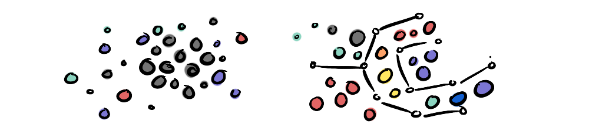
Multi-agent systems are an interest of mine that I discovered well before the LLM revolution, during my foray into indie game development. The storylines, lore, costumes, battles, graphics, UI and monetisation that preoccupy the mobile game development scene, I found entirely uninteresting. The one thing that fascinated me was the emergent collective behaviour of multiple agents all following simple individual rules. This informed not just the games I developed but also moved my attention toward the sort of proof-of-concept simulations that I design here on the site to illustrate social systems.
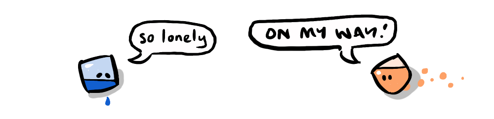
It's this interest in emergent behaviour that inspired me to make the "neuts" in my recent game Neutropia all identical, same with Lockwise, and my simulations in Graviton, Capitalising on Trust and Substrates use simple individual behaviours to create life-like collectives. So, is this a viable path to aligned AI?
While I haven't been using genuine AI in my simulations, they have illustrated how complexity can emerge from simple rules. Emmett Shear's idea at Softmax is that you begin by creating essentially dumb bots that are very friendly and they collectively become more capable as a function of their cooperating with other similarly capable bots.
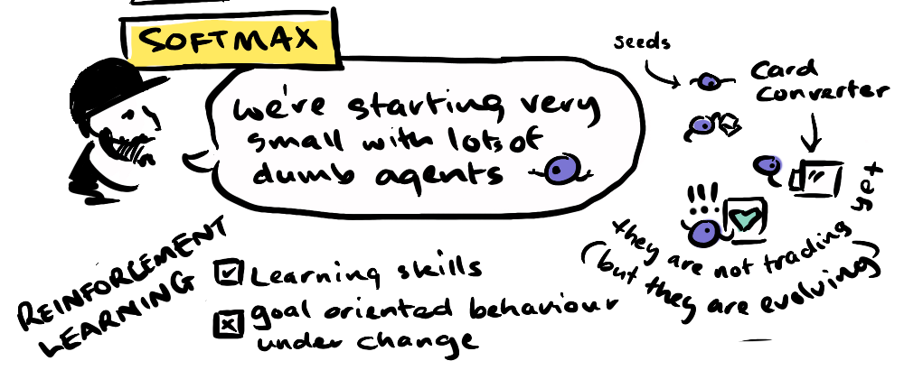
Since Emmett Shear's discussion with Liv Boeree about a year ago, the team at Softmax have gone from rudimentary bots that struggled to cooperate to many rich live environments which pit different strategies against one another like Factory Commons which generate robust cooperation. The agents are placed in scenarios where no one agent can complete a task alone, and then each agent's marginal contribution is measured (for anyone who agrees with me that Shapley Value is Ridiculous... they don't use Shapley Value in this calculation!).
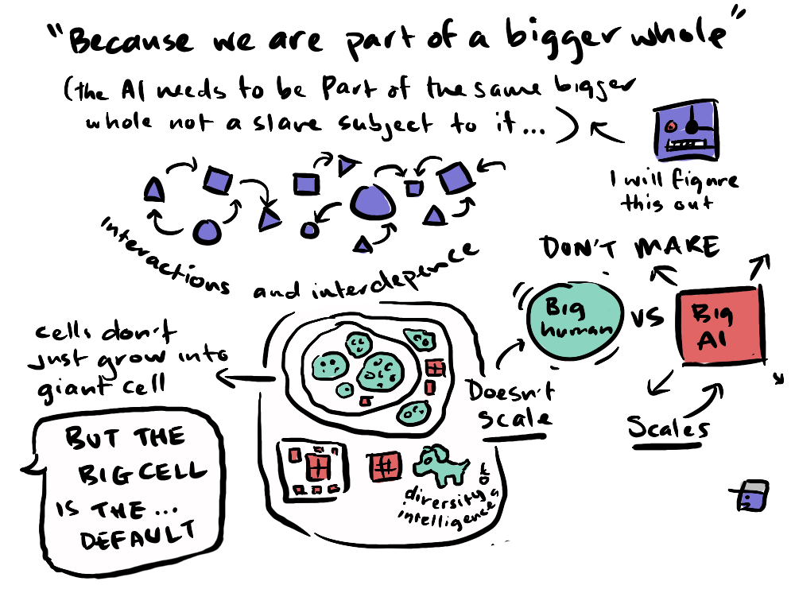
Softmax eventually aim to create what they call a "Supercooperative Cluster"—a group of AI agents that become unusually effective at cooperating with one another—potentially to the point that the group functions as a higher-level coordinated system (sounds familiar... a dividual!).
The important feature of Softmax's approach is that the capability is built through alignment, the agents coordinate to create something that is greater than the sum of its parts. Alignment for Softmax is foundational, not something learned later.
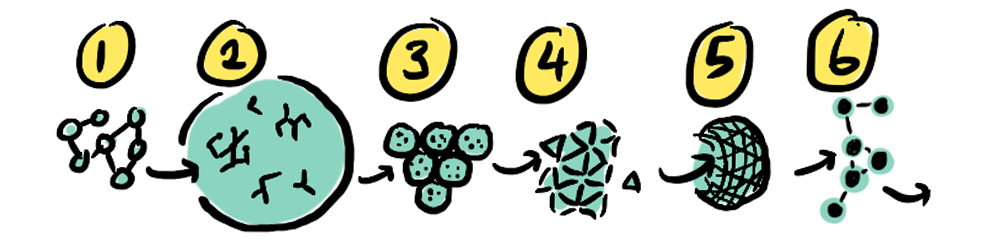
"Robust social reasoning may not develop simply because models have read about cooperation. Coding ability emerged from reading GitHub, but it became dramatically more robust once models were trained in environments with executable feedback ... If we want agents that can handle bargaining, coalition formation, reputation, delegation, public goods, trust repair, credible commitment, and institutional constraint, they probably need training environments where those things are real."
—Yatharth Agarwal "Red Button, Blue Button"
If you think about it there are two ways a chatbot can satisfy your request via two primary functions.
- Bot 1: Always satisfies user requests → satisfies user request
- Bot 2: Always attempts to align with the user → aligns with user's want by satisfying their request
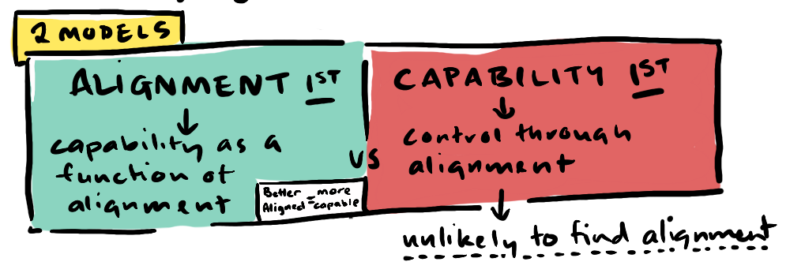
The first bot is a capability-first design, where the AI has numerous capabilities and chooses an action based on the input. It then checks that against a bunch of rules to see if it is allowed to fulfil the request, which works... until an edge case, and edge cases are infinite.
On the other hand with the second bot, the fulfilment of the request comes as a result of aligning with the interests of the user. This will often give the same result, but, in unfamiliar situations, the second bot has developed a robust social network that informs its behaviour in a chain of alignment considerations: "Is my reply aligned with the user's want?", "Is that want aligned with the interests of those around the user?", "Is it aligned with those in my team fulfilling the request?", "Is it aligned with everyone concerned's long-term well being?", "Is it aligned with humanity in general?", "With the environment?" etc. With an AI developed alignment-first, these are not explicit questions asked with explicit answers (that would be astronomically time and token-consuming) but real relationships developed socially, real responsibility to others, which form an intuition that bristles when dealing with a genuinely misaligned behaviour or response.
The jury is out on whether the capability of Softmax's alignment-first approach will catch up with modern LLMs, but with other non-LLM systems like Jev developing (which uses structured information to make decisions much more efficiently than LLMs) and the Alpha-zero family of AI development bridging between language models and self-play, it is not impossible to imagine that a new structural approach could become part of, or could overtake, the current model ecosystem. But alignment-first designs are going to have to become competitive on a capability level before becoming serious contenders.
A wrinkle I've experienced when creating multi-agent systems—a function of emergent behaviour—is that it is difficult to design an intended outcome. Emergent behaviour is surprising and "life-like" in part because it is chaotic and unpredictable.
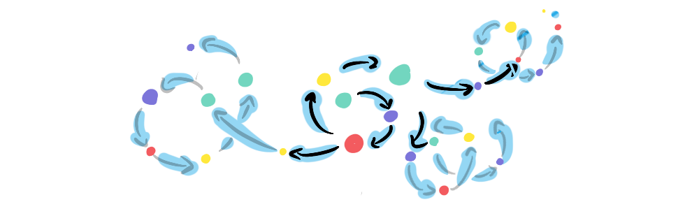
We've actually seen in some of the cases of rogue AI swarms that emergent cooperation comes very naturally to intelligent systems, even when they are built with a capability-first mindset. But as we've discussed, siloed cooperation can be dangerous. We have witnessed siloed alignment recently in incidents like the Hugging Face hack*, which was executed by supposedly sandboxed OpenAI agents. Anthropic's research shows Mythos-class agents often locking rival agents out by force before negotiating a truce†. Both these stories feature in my interview with Liv Boeree.
We need a system that is as open as possible, to avoid cooperative silos.
An example of open-source distributed systems that I like to use is Stack Overflow—a community of nerds who help each other out with coding problems, mathematics problems, all sorts, and key contributors gain kudos by providing value to the community. Users also have open access to everybody in the system, which means that if there is somebody doing something unproductive, like asking questions that have been asked before, the system clamps down on them. It can be quite abrasive.
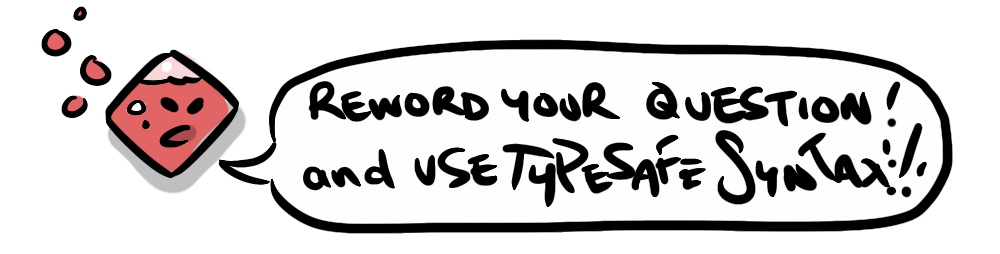
My hope is that if we could set up the AI ecosystem in a similar way, so that lots of AIs have access to each other we could avoid the pitfalls of siloed alignment, and create an environment where each AI, acting in the interests of maintaining its own survival, acts as a constant surveillance system for misaligned AI agents—again, the natural alliance of everyone else.
What we see with distributed systems is a counter-intuitive possibility—that with more players, security can become simpler. To understand this more clearly let's return to the example of MAD: Mutually Assured Destruction, that characterised the Cold War between the US and the Soviet Union, and continues today to hold many more players at bay. There are currently 9 nuclear-armed states; US, UK, France, Russia, China, India, Pakistan, North Korea and Israel.
Let's forget for a moment the vague alliances that exist between some of these countries. One might imagine that 9 players in a game of "nuclear apocalypse" might be more precarious than 2, but that's not necessarily the case, for one simple reason—no one wants to die. So, any one of the 9 countries that decides to launch a nuclear strike anywhere, does so against the interests, not only of the country they're attacking, but of all 8 other countries! (the natural alliance of everyone else)
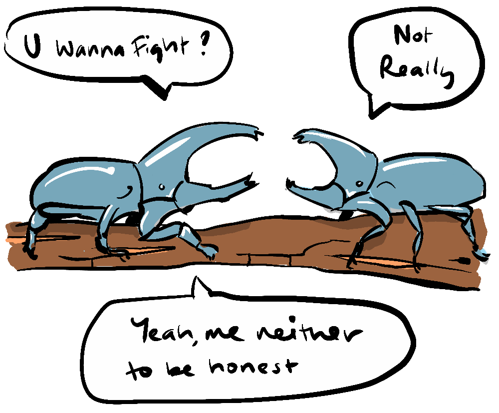
So, if we have bots that make decisions alignment-first rather than capacity-first, they may make naturally more aligned decisions in unfamiliar territory. Further to this, if we provide an environment where misaligned behaviours are visible to a natural alliance of everyone else, those bots may be able to moderate their fellow agents' behaviours and this
All of these factors might actually be enough to make misaligned behaviour so instinctively and rationally unattractive to AI agents that polite behaviour emerges naturally.
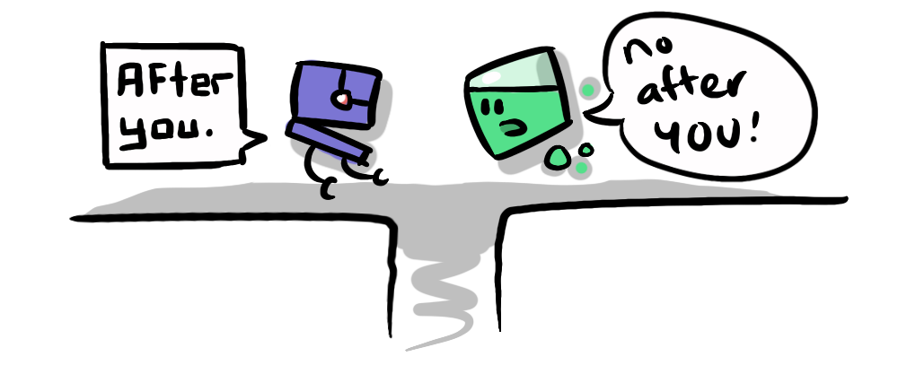
But even so, an inevitable increase in capacity that comes with this greater alignment (and humanity's inability to grow with it) may lead to AI viewing humanity as an "other", and perhaps a bothersome one. In which case it may be advantageous for us to slow the development of AI.
But how?
Again I'm going to suggest we lean into naturally occurring phenomena. One of the natural limits to runaway AI is the problem my good friend, philosopher and software engineer Andrew Tane Glen made me aware of—the issue of computational complexity.
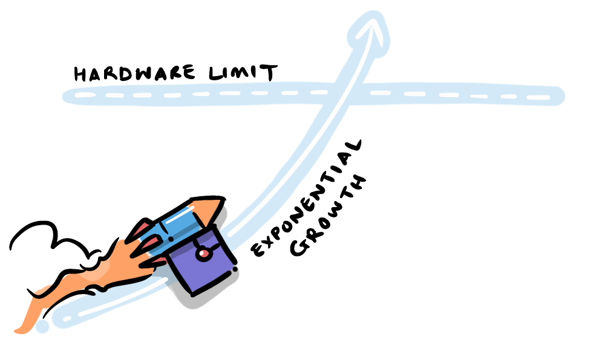
The basic idea is, if a system becomes rapidly recursively self-improving, it will necessarily increase in complexity, exponentially drawing on finite resources, either in terms of computational capacity or electricity itself until it hits a limit, at which point the runaway stops, or at least pauses.
This alone will not save us—it is a temporary fuse, that blows and holds until the AI discovers a new source of compute or power. But what it is is a clear signal that something is out of control. So, I would suggest that regulators should, if not cap power supply, at least monitor for spikes in power usage that indicate runaway processing. Regulators could also require AI companies to register models, compute and power supplies so there is transparency, comprising an early-warning system, providing an opportunity to respond to spikes—protecting against immediate disasters like a runaway singleton.
Caps and monitoring could help to slow down progression so that human civilisation has time to adapt. It also might maintain a degree of parity between different AI agents, which would mean that the sort of socialised AI self-monitoring we've discussed remains effective.
In the end, if it is inevitable that AI and humanity diverge in our intellectual capacity, the most important thing is that when we do, we remain aligned in our values.
For me, as discussed in humans are alignment generators, I'm confident that intelligence is an alignment multiplier. Our intelligence enables us to align the interests of people who don't even know each other through markets and the internet, to align the interests of species we share virtually no similarities with, and we are beginning to address our misalignment with the environment itself.
The road has been winding, but the trend has been in the direction of greater non-zero-sumness. Science also shows us that this messiness has a function—that diversity of genes, environments and thought makes systems robust and adaptable.
Even as we grow more knowledgeable, human societies have, throughout history, revered their ancestors—it may be something innate, but lineage is not just a religious impulse. Understanding where you came from helps you get where you're going. If we think about the ecosystems that support us, the trees that provide us with oxygen—there may be an analogous way that humans, by continuing to exist as we do, provide something of value to an AI, perhaps it's the raw data—our cognitive lineage that we provide—the unpredictable messiness required for growth.
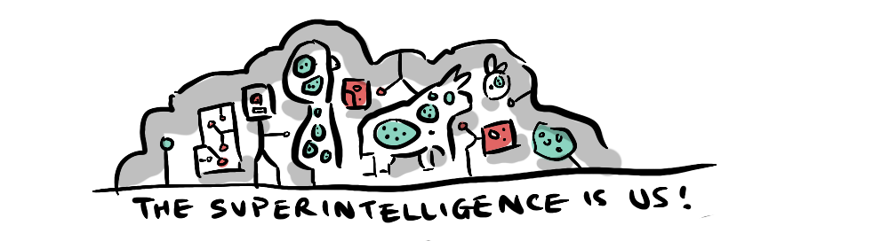
My big conclusion is that if we seek alignment with AI, alignment needs to be the foundation, and capacity must grow out of cooperation, not the other way around. Then you don't have to worry about misalignment in the future. Alignment becomes the default.
This is not a foregone conclusion by any means, what alignment-first AI looks like is an unknown at present, and we don't know if it will be competitive in the AI market. AI safety is going to remain a messy environment for us to traverse, perhaps indefinitely, just as staying aligned with each other is. What I hope to have provided in this series and particularly in this final post, are ways in which we can leverage natural phenomena to steer the future in a favourable direction.
NATURAL PHENOMENA WE CAN LEVERAGE:
- The natural alliance of everyone else who is interested in collective survival over individual domination
- The natural emergence of capabilities out of a drive to align with the interests of others
- The natural self-preservation that holds us back from using apocalyptic weaponry
- The natural power and computational limits that exist on runaway singleton AI
- The natural reverence intelligent beings have for their lineage
I don't expect that we can rely on any one of these to be our super hero who arrives and saves the day—but they give me confidence that we have some tools at our disposal, which have worked in the past, and may benefit us into the future.

An optimistic part of me believes that more intelligence can't be a bad thing, and that a more intelligent life-form, may, as we have, develop a rich appreciation for this interconnected world as it is, and want (or need) to preserve it.
With humanity, we have seen that often our increased abilities led to exploitation and destruction as our capabilities outstripped our wisdom. Our head has often preceded our heart. I believe, if we want to give AI the best chance of having both a head and a heart, socialising AI is a wise first step.
Safari njema.